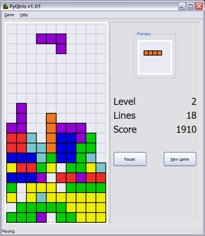

A while ago, to learn wxPython, I've written wxPytris. Since then, I've switched to PyQt for my Python GUI coding and don't even bother to install wxPython on my machines any more.
Therefore, I've rewritten the tetris game with PyQt. PyQtris is the name of the new game (am I original or what?). It's an exact clone appearance-wise, and works with the same high-scores file, so it can be just plugged in for wxPytris.
Here's the mandatory screenshot:
The porting process was easy, although a bit boring. Most of the GUI code maps 1-to-1 between wxPython and PyQt, and there are only some quirks to be handled differently. The built-in double-buffering of widgets in Qt4 helps make it a cleaner code in the drawing part.
Get the source code here. You can run it with Python 2.6 and the latest PyQt. If you're on Windows, you can also download this 6MB executable that has no dependencies whatsoever (created with PyInstaller).